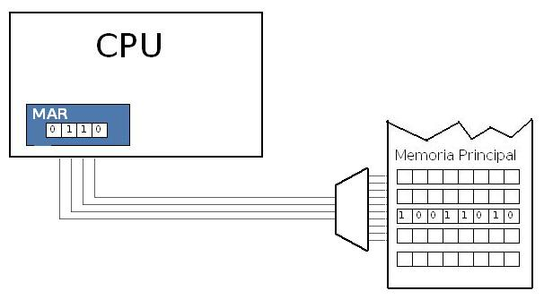
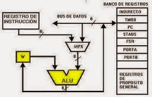

2.1 Organización del procesador
La Unidad de Procesamiento (CPU) controla el funcionamiento del computador y lleva a cabo sus funciones de procesamiento de datos. Frecuentemente se le llama procesador. Un procesador, incluye tanto registros visibles por el usuario como registros de control/estado. Los registros visibles por el usuario pueden ser de uso general o tener una utilidad especial, mientras que los registros de control y estado se usan para controlar el funcionamiento del procesador, un claro ejemplo es el contador de programa. Lleva a cabo una gran variedad de Cálculos Comparaciones numéricas Transferencias de datos como respuesta a las peticiones de los programas que están siendo ejecutados en memoria.
2.2 Estructura de registros
Registros del CPU Se emplean para controlar las instrucciones en ejecución, manejar direccionamiento de memoria y propiciar la capacidad aritmética. Los registros vienen de tres tipos: datos, direcciones e índice, que tiene lugar en casi todos los aspectos de la operación del CPU. El tamaño de un registro depende del CPU; los más simples tienen registros que aceptan 8 o 16 bits de datos y los más complejos tienen registros de 32, 48 o 64 bits.

2.2.1 Registros visibles para el usuario
Un registro visible al usuario es aquél que puede ser referenciado por medio del lenguaje máquina que ejecuta la CPU. Prácticamente todos los diseños contemporáneos de CPUs están provistos de varios registros visibles al usuario, en oposición a disponer de un único acumulador. Podemos clasificarlos en:
- Registros De uso General:
Los registros de uso general pueden ser asignados por el programador a diversas funciones. A veces, su uso dentro del repertorio de instrucciones es para contener el operando para cualquier código de operación. Esto proporciona una utilización de registros de auténtico uso general. Con frecuencia, sin embargo, existen restricciones.
Por ejemplo, puede haber registros específicos para operaciones en coma flotante. En algunos casos los registros de uso general pueden ser utilizados para funciones de direccionamiento. En otros casos hay una separación clara o parcial entre registros de datos y registros de direcciones.

- Registros De Datos:
Los registros de datos pueden ser usados únicamente para contener datos y no se pueden emplear en el cálculo de una dirección de operando. Los registros de dirección pueden ser en sí registros de uso más o menos general, o pueden estar dedicados a un modo de direccionamiento particular.

El caso más conocido es el puntero a pila. La cantidad de registros generales o especializados es una cuestión de diseño. No hay solución óptima, pero la tendencia parece ir hacia el uso de registros especializados. Otro problema de diseño es el numero de registros, de uso general o de datos más direcciones, que tienen que incluirse. A mayor cantidad de registros se requieren mayor cantidad de bits en el campo de operando. Parece óptimo entre 8 y 32 registros. Menos registros se traducen en más referencias a memoria; más registros no reducen notablemente las referencias a memoria. Por último, está la cuestión de la longitud de los registros. - Registros De Direcciones:
Los registros que han de contener direcciones han de ser lo suficientemente grandes como para albergar la dirección más grande.

Los registros de datos deben ser capaces de contener valores de la mayoría de tipos de datos. Algunas máquinas permiten que los registros contiguos sean usados como uno para contener valores de doble longitud. - Registros De Codigos de condicion:
Los códigos de condición son bits fijados por el hardware de la CPU como resultado de alguna operación.

Por ejemplo, una operación aritmética puede producir un resultado positivo, negativo o nulo, o con desbordamiento. Además de almacenarse el propio resultado en un registro o en la memoria, se obtiene también un código de condición. Los bits de códigos de condición se reúnen en uno o más registros. Por lo general, forman parte de un registro de control. Comúnmente, las instrucciones de máquina permiten que estos bits sean leídos por referencia implícita, pero no pueden ser alterados por el programador.
2.2.2 Registros de Control y estado
Registos de control:
Los registros de control son fundamentales para el funcionamiento de la CPU, aunque generalmente no
son visibles para el usuario. Algunos de ellos pueden ser accesibles mediante instrucciones de
máquina ejecutadas en ciertos modos, como el modo de control o el modo de sistema operativo. Estos
registros incluyen el contador de programa (PC), el registro de dirección, el registro de
instrucción y el registro de datos. El PC contiene la dirección de la próxima instrucción a ejecutar
y se actualiza después de cada captación de instrucción, apuntando siempre a la siguiente
instrucción.
Registros de estado:
Por otro lado, los registros de estado, también conocidos como registros de bandera, son conjuntos
de bits dentro del procesador que indican el estado de ciertas condiciones después de una operación.
Estos bits se utilizan para propósitos de programación y cada uno tiene un propósito único. Por
ejemplo, el indicador de acarreo se establece si una operación anterior resultó en desbordamiento,
mientras que el indicador de cero se establece si el resultado de la operación más reciente fue
cero. Otros indicadores incluyen el de deshabilitar interrupción y el de bandera decimal, que
afectan al comportamiento del procesador en ciertas situaciones.

2.2.3 Ejemplos de registros de CPU reales
x86:
EAX, EBX, ECX, EDX (Propósito General)
ESP (Puntero de Pila)
EIP (Contador de Programa)
EFLAGS (Registro de Estado)
ARM:
R0, R1, R2, R3 (Propósito General)
SP (Puntero de Pila)
PC (Contador de Programa)
CPSR (Registro de Estado)
2.3 El ciclo de instrucción
Arquitecturas Cisc
La mayor parte de los trabajos de la CPU se llevan a cabo bajo el control de la instrucción, de
acuerdo a una secuencia impuesta por el programa en ejecución. Este proceso incluye la captura de la
instrucción, su decodificación, la lectura de los operandos, la ejecución de la instrucción, y la
escritura del resultado.
El ciclo de instrucción (que se muestra en la figura a continuación) es un proceso de varios pasos,
que incluye: captura de la instrucción, decodificación de la instrucción, ejecución de la
instrucción y almacenamiento del resultado.

2.3.1 Ciclo Fetch-Decode-Execute
Los pasos del ciclo de instrucción se detallan a continuación:
Traer la Instrucción: Obtener la instrucción desde la memoria.
Decodificar la Instrucción: Identificar el modo de direccionamiento y la ubicación de los datos.
Cargar Parámetros: Ejecutar la lectura de los datos.
Ejecutar: Realizar la tarea indicada por la instrucción.
Almacenar: Guardar el resultado de la ejecución.
Actualizar PC: Actualizar el registro de Contador de Programa con la dirección de la siguiente
instrucción a ejecutar.

2.3.2 Segmentación de instrucciones
La segmentación, o pipelining, aumenta el rendimiento del sistema al dividir el proceso en etapas que se ejecutan simultáneamente. Una vez el canal está lleno, los resultados de cada comando se producen secuencialmente sin latencia adicional.
2.3.3 Conjunto de instrucciones, características y funciones
El conjunto de instrucciones (ISA) detalla las instrucciones que una CPU puede entender y ejecutar. Incluye los tipos de datos nativos, las instrucciones, los registros, la arquitectura de memoria y las interrupciones. Los tipos principales de ISA son CISC, RISC y SISC.
2.3.4 Modos de direccionamiento
Los modos de direccionamiento son las diferentes maneras de especificar un
operando dentro de una instrucción en lenguaje ensamblador. Los principales modos de
direccionamiento incluyen:
Inmediato: El valor del operando se especifica directamente.
Directo: La dirección de memoria del operando se especifica directamente.
Indirecto: La dirección de memoria del operando se obtiene a través de un registro o puntero.
Basado en Registro: La dirección de memoria se calcula sumando un desplazamiento a un registro
base.
Indexado: La dirección de memoria se calcula sumando un registro índice a otro registro.
Relativo: Utilizado en instrucciones de salto, calculando la dirección sumando un desplazamiento
al
contador de programa (PC).
2.4 Casos de estudio de CPU reales
Intel 8086: Este procesador es un clásico. Sus registros se utilizan para contener datos con los que se está trabajando, ya que el acceso a los registros es mucho más rápido que a la memoria. Además, permite realizar operaciones aritméticas, lógicas y comparaciones.
Comparación entre Intel y AMD: Ambas marcas son líderes en el mercado de procesadores. La elección entre ellas depende de tus necesidades específicas. Algunos factores a considerar son el precio, el consumo de energía y el rendimiento. Ambas implementan tecnologías similares, pero la elección debe basarse en el uso que le darás a tu computadora.